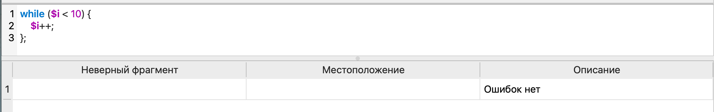
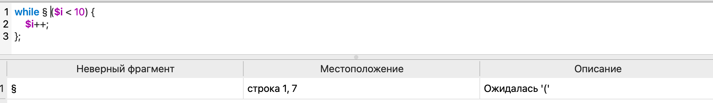
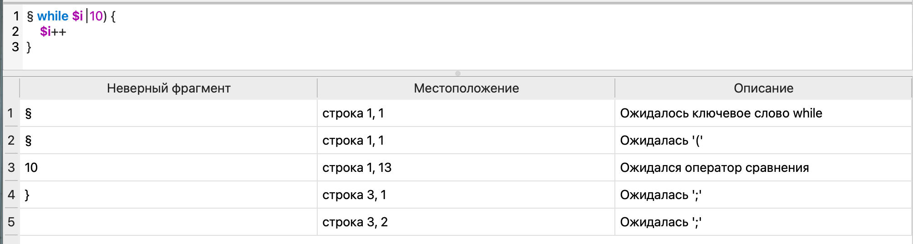
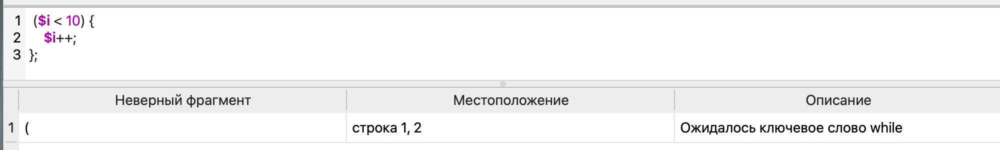
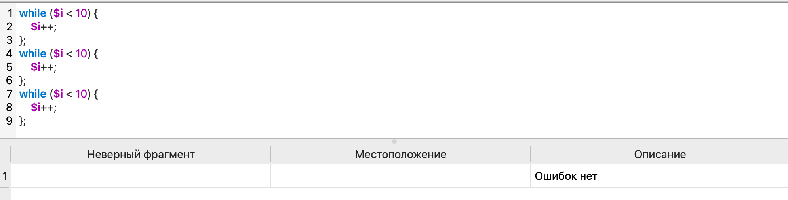
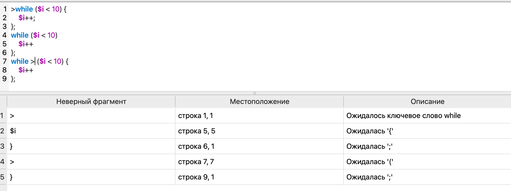

Тестовые примеры
На рисунках 2–8 представлены тестовые примеры запуска разработанного синтаксического парсера для создания цикла while на языке PHP.

Рисунок 2 — Тестовый пример верной конструкции

Рисунок 3 — Тестовый пример конструкции с одной ошибкой

Рисунок 4 — Тестовый пример конструкции с несколькими ошибками

Рисунок 5 — Тестовый пример конструкции без ключевого слова while

Рисунок 6 — Тестовый пример нескольких верных конструкций

Рисунок 7 — Тестовый пример нескольких конструкций с несколькими ошибками